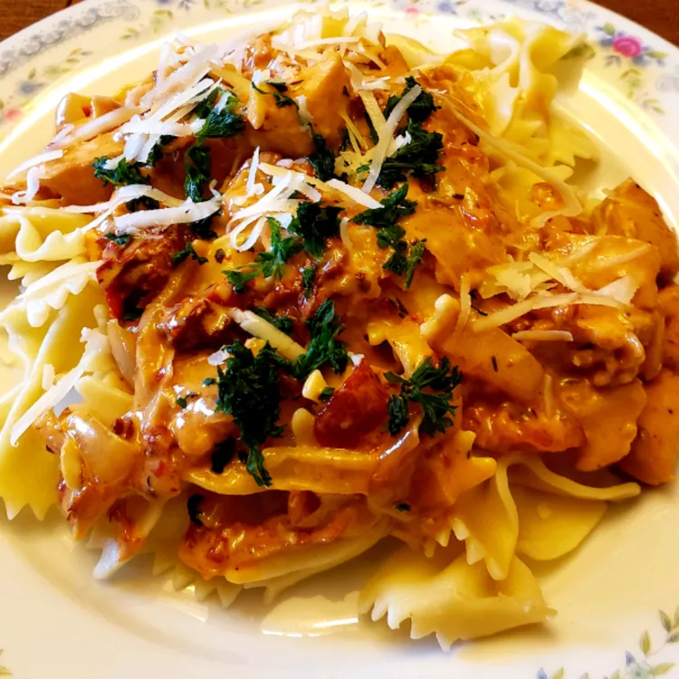

Odin Recipes
Creamy Tomato Pasta

Description
Creamy Tomato Pasta is a comforting and quick dish that combines al dente pasta with a rich, creamy tomato sauce. It’s perfect for busy weeknights and can be made with pantry staples.
The sauce is silky and flavorful, making this pasta a family favorite. Pair it with garlic bread or a fresh salad for a complete meal.
Ingredients
- 8 oz pasta (penne or spaghetti)
- 1 tablespoon olive oil
- 2 cloves garlic, minced
- 1 can (14 oz) crushed tomatoes
- 1/2 cup heavy cream
- 1/4 cup grated Parmesan cheese
- 1/2 teaspoon dried basil
- Salt and pepper, to taste
- Fresh basil for garnish (optional)
Steps
- Cook pasta according to package instructions. Drain and set aside.
- In a large skillet, heat olive oil over medium heat. Add garlic and sauté until fragrant.
- Add crushed tomatoes and dried basil. Simmer for 5 minutes.
- Stir in heavy cream and Parmesan cheese. Season with salt and pepper.
- Add cooked pasta to the sauce and toss to coat.
- Garnish with fresh basil and serve hot.